SPRED Manual
SPRED is a score writing, playback, and practice-assist tool developed for fretless instruments such as the Otamatone.
1. Getting Started
Hello to Otamatonists around the world.
1.1. About SPRED
SPRED is a score writing, playback, and practice-assist tool developed for fretless instruments such as the Otamatone.
You can use it directly in a web page without installing a separate program.
- Load and save score JSON files
- Play piano-roll style scores
- Create and edit scores
- Change score layouts
- Synchronize score playback with YouTube videos
- Pitch and timing evaluation
1.2. Recommended Environment
- Development is centered on PC and Chrome.
- Mobile devices can load and play scores, but they are not the main support target. Some features may be inconvenient or unavailable.
1.3. Recommended Specs
Recommended specs are still being finalized through testing. For now, a PC that can run a recent Chrome-based browser smoothly is recommended.
Long scores, YouTube sync, and practice mode can be affected by device performance and browser condition.
2. Top Menu
The top menu can be divided into the left menu area, center player area, and right YouTube area. Open each item for details.
2.1. Left: Menu Area
The menu area is used to adjust app settings.

File

Load or save score files. Score files normally use the .json extension.
Before loading a JSON file made by someone else, make sure the file is safe. For long-term storage or sharing, use JSON Download rather than Local Save.
View
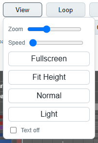
Changes visual score settings.
Loop
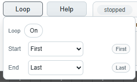
Select a section of the score and loop it.
This draft manual explains the loop UI. Check the latest test build for the current state of repeated playback behavior.
Edit Mode
Switches to score editing mode. After Edit Mode is turned on, clicking a score cell edits the score using the selected input tool and active track.
Detailed input methods are explained in later editing sections.
Track
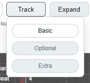
Selects active tracks. The current version has Basic, Optional, and Extra tracks, each shown in a different color.
- Inactive tracks are shown translucent on the screen.
- Inactive tracks do not sound during playback.
- Notes on each track are stored independently.
- If multiple tracks are active, clicking notes can input them to all active tracks at once.
Expand
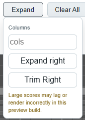
Changes the score length.
Very long scores can affect device performance. Expanding only as much as needed is recommended.
Clear All
Clears the whole score and returns it to the initial default state.
Use JSON Download to back up your score before using this.
2.2. Center: Player Area
This area works much like a standard music player.
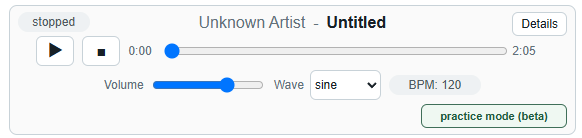
Playback Controls
Details

Shows and edits score information. Created and updated timestamps are automatically refreshed based on save time and cannot be edited directly.
After editing, press Save. Use File -> JSON Download or Local Save to preserve that information.
practice mode (beta)
Uses microphone input to measure how well your playing matches the score, helping evaluate pitch and timing.
Details are explained in a separate section.
2.3. Right: YouTube Area
This feature links a YouTube video so it can play like accompaniment.
YouTube sync
SPRED does not download, store, cache, extract, or redistribute YouTube videos. It uses the official embedded player and follows the score playback position.
If you do not use YouTube Premium or an ad blocker, an ad may play before the video. After the ad finishes, the video works like a normal video.
3. Score Area
The score area shows the actual piano-roll score. Labels on the left describe each row, and score cells continue to the right along the time axis.
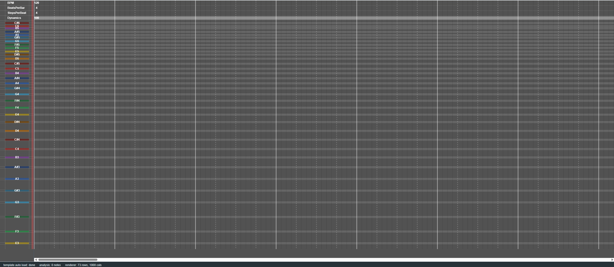
3.1. Screen Structure
The horizontal direction means time flow. The vertical direction means the score's row structure.
3.2. Row Types
At first, it is recommended to enter ordinary notes in note rows and only check basic values such as BPM in global rows.
3.3. Viewing Scores
- Use horizontal scrolling to move through long scores.
- Use vertical scrolling to move between high and low pitches.
- Use
Zoom,Speed, andFit Heightin theViewmenu to adjust the view. - Use
Text offto hide note text and make the score cleaner.
Very long scores may scroll or render slowly depending on device performance.
4. Edit Mode Basics
Edit Mode is used to edit score cells directly. If you are creating a score for the first time, start with basic note input, deletion, Undo, and Redo.
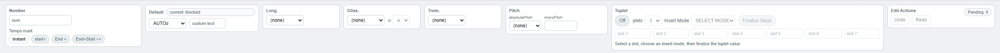
4.1. Basic Workflow
- Turn on
Edit Mode. - Check the track to edit in the
Trackmenu. - Select the desired value in the input tool.
- Click a cell in the score area.
- The selected value is written to the current active track's cell.
If several tracks are active at once, input may be written to several tracks together. Check the Track state before editing.
4.2. Delete, Undo, and Redo
Undo / Redo history is kept only within the current session. It may reset when a new score is loaded or the score structure changes significantly.
4.3. Range Selection and Copy
Use Ctrl + drag to select several cells at once.
A preview rectangle appears before pasting. This copy feature is for SPRED score cells and is not exactly the same as copy / paste in a normal text editor.
5. Input Symbols and Expressions
SPRED note cells can contain several symbols for musical expression.
5.1. Basic Input
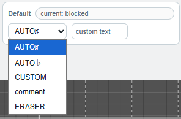
When creating your first score, start with ordinary notes and simple text input.
5.2. Long Notes and Expression Symbols
-Used for ordinary long-note connection.~Used for a long-note expression with vibrato.Pitch is mainly used for harmonics where finger position and sounding pitch differ, exceptional pitch handling, and microtonal expression.
Symbols can be combined, but combinations that are difficult to interpret musically may be limited or only partly interpreted.
5.3. Glissando Input
Glissando connects a start point, optional middle points, and an end point so the pitch slides between them.
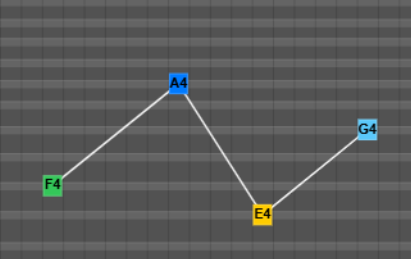
When using several glissandos at the same time or placing them close together, use different ids so the connections do not mix.
Within the same id, the order should naturally follow start - mid - end. If the order is mixed or there is no end, the result may be interpreted differently from your intention.
5.4. Tuplet Input
Tuplet divides one cell into several sub-notes to express rhythms such as triplets. Because the input process is more complex than other tools, it is easiest to understand it as making a tuplet value first and then placing it in the score.
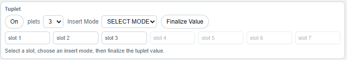
The basic order is as follows.
- Turn on
Tuplet mode. - Choose the division count in
Division. - Select the slot to edit.
- Use
Select rowor an input tool to fill each slot's note. - Leave a slot empty when a rest is needed.
- When all slots are set, press
Finalize Value. - Click the desired cell in the score area to input the tuplet.
A tuplet places several sub-notes inside one cell. When editing an existing tuplet, check the hit area and slot selection more carefully than with ordinary notes.
5.5. Pitch Input
The Pitch area sets the actual sounding pitch and cent-level adjustment separately, based on the note row you click in the score.
The basic input order is as follows.
- Turn on
Edit Mode. - If needed, choose the actual sounding pitch in
absolutePitch. - If a microtone is needed, enter a cent value in
microPitch. - Click the desired note row and cell in the score area.
For example, if you want the display position to stay on a lower row while the actual sound is a higher harmonic, use absolutePitch or AUTO◇ +2oct. For a note that should be slightly higher or lower than the base pitch, enter a positive or negative cent value in microPitch.
Pitch modifiers can affect display position, playback pitch, and practice mode judging. If a note sounds different from what you intended, first check whether absolutePitch or microPitch values remain.
6. Using Layout
Layout controls the score's vertical structure, pitch rows, gap rows, row heights, and related settings.
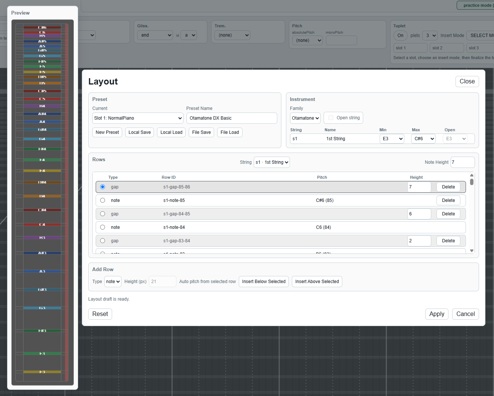
6.1. What Layout Does
Layout is directly connected to score structure, so it is recommended to start with row height adjustments or checking presets.
6.2. Saving and Loading Presets
Score files store the base layout, while user layout customizations are managed as separate presets.
6.3. Notes and Cautions
- Deleting rows or changing row types can conflict with existing cells.
- If the structural conflict is large, apply or import may fail.
- If the score looks wrong, first check the layout preset and row structure.
- When uncertain, back up the score with
JSON Downloadbefore editing the layout.
7. Practice Mode Beta
Practice Mode Beta uses microphone input to compare your playing with the score and help you check pitch and timing.
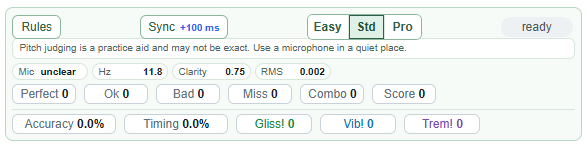
7.1. How to Start
- Load the score you want to practice.
- Check the track to practice.
- Press
practice mode (beta). - Allow microphone permission if the browser asks.
- If needed, adjust input delay with
Sync. - Start playback.
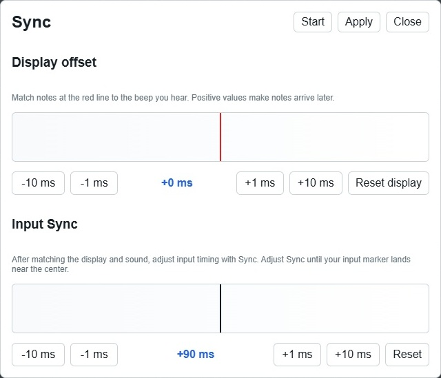
During practice mode, some features such as score loading, editing, and layout changes are locked. This prevents the scoring criteria from changing during practice.
7.2. Judge Display
Detailed criteria can be checked from Rules in the upper-left area of the Practice mode window.
The result window shows pitch accuracy, timing accuracy, total score, max combo, and the count of each judgment.
7.3. If Detection Seems Wrong
- Test in a quiet place.
- Check that the browser is using the correct microphone.
- Very quiet sound or background noise can interfere with pitch detection.
- If speaker sound enters the microphone loudly, judging may become unstable.
Practice Mode Beta is a simple practice aid, not a game with strict judging. Results may be inaccurate.
8. Security and Privacy
8.1. Be Careful with Personal Information
- Do not put sensitive personal information in score metadata or comments.
- On shared PCs, avoid using
Local Saveor clear browser data after testing. - Data saved in local storage may be visible to the same browser user.
8.2. Files and Access Words
- When using a JSON file from someone else, make sure it comes from a trusted source.
- It is also a good idea to ask an expert or AI agent to help inspect it for safety.
10. Glossary
Here are short explanations of terms that appear repeatedly in the app.